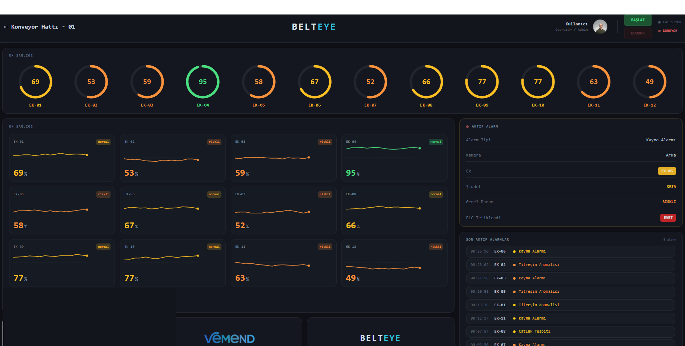
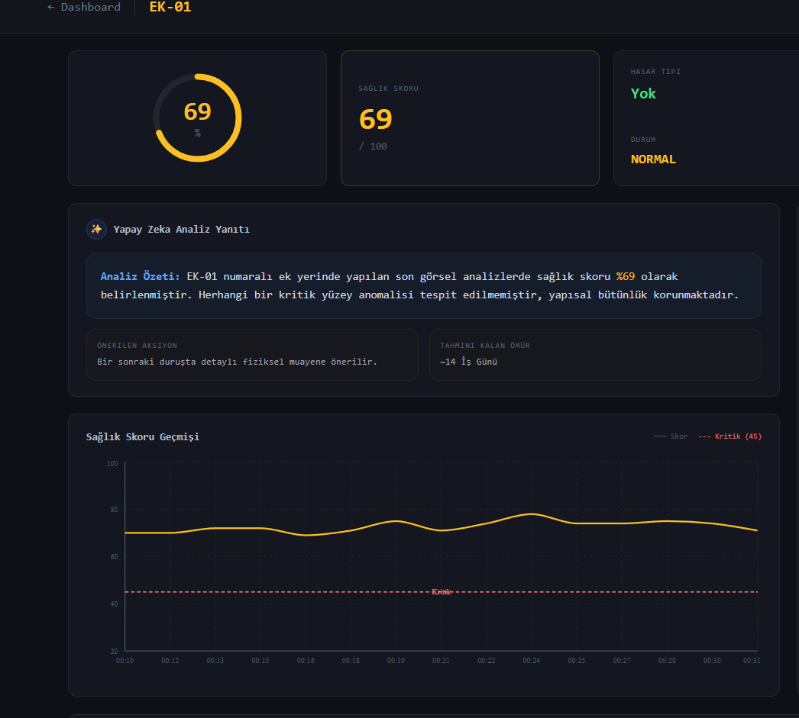

BeltEye, konveyör bant ek bölgelerini görüntüleyen, yapay zeka destekli analiz yapan ve bakım ekiplerine erken uyarı sağlayan endüstriyel izleme çözümüdür. Plansız duruş riskini azaltın, kontrolleri standardize edin.

BeltEye, görüntüyü operasyon verisine dönüştürür. Bakım ekipleriniz sahadaki durumu tahmin yerine veriye dayalı olarak değerlendirir.
Bant ek bölgelerini kamera sistemiyle düzenli olarak görüntüleyin. Manuel kontrollerdeki tutarsızlığı ortadan kaldırın, her kontrolü kayıt altına alın.
Görüntüleri yapay zeka modeli analiz eder; çatlak, aşındırma, kaymış ek gibi hasar tiplerini sınıflandırır ve sağlık skoru üretir.
Ek noktalarının geçmiş skorları, trend grafikleri ve alarm geçmişi ile bakım planlamasını önceliklendirin. Karar verme sürecini veriye dayandırın.
Ek noktalarında oluşan hasar genellikle gözle fark edilemez. Tespit edildiğinde bant durmuş, üretim hattının tamamında aksamıştır.
Gözle yapılan kontroller subjektiftir; kişi, ışık ve zaman farklarına bağlı olarak değişir. Standart bir ölçüm yoktur, geçmiş karşılaştırma yapılamaz.
Hangi ekin ne zaman kontrol edildiği, ne durumda olduğu ve ne hızla kötüleştiği çoğu tesiste dokümante edilmez.
Hasar görsel olarak fark edildiğinde genellikle ilerlenmiş durumdadır. Erken uyarı mekanizması olmadan zamanında müdahale mümkün değildir.
BeltEye, saha koşullarında çalışan kamera sistemi, yapay zeka analizi ve dashboard ekranıyla bant eklerinizi izlenebilir hale getirir.
Her ek noktası görüntülenir, yapay zeka tarafından analiz edilir ve sayısal bir sağlık skoru üretilir. Subjektif değerlendirme yerine ölçülebilir veri elde edin.
Skor düşüşleri ve anomaliler otomatik olarak alarm üretir. Hasar ilerlemeden müdahale şansı yakalanır.
Her ekin skor geçmişi, hasar kayıtları ve trend grafikleri saklanır. Hangi ekin ne zaman bakıma ihtiyaç duyduğunu veriye dayalı olarak görün.
Manuel kontrollerin kalitesi kişiden kişiye değişmez. Her kontrol aynı yöntemle, aynı ölçütle yapılır ve kayıt altına alınır.

Kurulumdan analize, raporlamadan uyarıya kadar tüm süreç entegre ve otomatik olarak çalışır.
BeltEye saha ölçüm sistemi konveyör hattının ek geçiş noktasına monte edilir. Sensör, ekin kamera önünden geçişini algılar.
Her ek noktası saha ölçüm sistemi tarafından algılanır ve edge işlem birimine aktarılır.
BeltEye model analizi ile hasar tipi, şiddet derecesi ve sağlık skoru üretilir. Sonuçlar anlık olarak dashboard'a yansır.
Kritik skor düşüşleri alarm üretir. Tüm veriler geçmiş kayıtlarla birlikte raporlanır, bakım ekipleri bilgilendirilir.
BeltEye sadece bir izleme aracı değil; bakım planlaması, risk yönetimi ve operasyonel verimlilik için veri üreten bir sistemdir.
Ek noktalarındaki bozulmayı erken tespit ederek, ani duruşların önüne geçin. Bakım zamanlamasını veriye dayalı olarak belirleyin.
Her kontrol aynı yöntemle, aynı ölçütle yapılır. Kişiye bağlı değerlendirme farklarını ortadan kaldırın.
Her ek noktasının skor geçmişi, görüntü arşivi ve alarm kayıtları saklanır. Denetim ve raporlama süreçlerinde kullanın.
Hangi ekin öncelikli bakıma ihtiyacı olduğunu net olarak görün. Kaynakları doğru yönlendirin, gereksiz bakımdan kaçının.
Manuel kontrollere harcanan zamanı azaltın. Sahada gezerken değil, dashboard üzerinden bant sağlığını izleyin.
Bant başında yapılan riskli manuel kontroller azalır. Uzaktan izleme ile personel güvenliğine katkı sağlanır.
Ek noktalarının sağlık skorları, alarm durumu, AI değerlendirmeleri ve geçmiş trendleri tek bir dashboard üzerinden izleyin.
BeltEye, konveyör bant kullanan her endüstriyel tesiste uygulanabilir. Özellikle kritik taşıma hatlarında değer üretir.
Yeraltı ve açık ocak konveyör hatları. Toz, nem ve titreşim koşullarında güvenilir izleme. Ana bant hatları ve nakliye konveyörlerinde sürekli ek takibi.
Ana Hat BantlarıKireçtaşı, klinker ve ham madde taşıma bantlarında yüksek toz ortamında izleme. Ek noktası arızalarının yol açtığı üretim duruşlarını önleyin.
Ağır Yük BantlarıKömür besleme konveyörleri ve kül taşıma hatlarında kesintisiz izleme. Termik santrallerde üretim sürekliliği için kritik bantların takibi.
Besleme HatlarıYükleme ve boşaltma köprüleri, stok sahası konveyörlerinde gerçek zamanlı izleme. Yüksek kapasite hatlarında ek güvenilirliğini koruyun.
Yükleme KöprüleriCevher ve pelet taşıma bantlarında yüksek sıcaklık koşullarına dayanıklı izleme. Fırın besleme hatlarında sıcak materyal kaynaklı bant hasarlarını erken tespit edin.
Hammadde TaşımaTarım, gıda, gübre ve kimya sektörlerinde kullanılan konveyör bantlarında ek noktası izleme. Farklı malzeme türlerine uyumlu analiz.
Genel EndüstriBeltEye bir laboratuvar ürünü değil; saha için tasarlanmış, endüstriyel koşullarda çalışmak üzere geliştirilmiş bir çözümdür.
Tüm bileşenler endüstriyel ortam için seçilmiştir. Toz, nem, titreşim ve sıcaklık koşullarında test edilmiştir.
Kameradan dashboard'a kadar tüm zincir entegredir. Ayrı ayrı bileşenleri birleştirme zahmetine gerek yoktur.
Standart tek hat kurulumu bir gün içinde tamamlanabilir. Mevcut altyapıya minimum müdahale ile devreye alınır.
Veriler sahada işlenir. İnternet bağlantısı kesilse bile sistem çalışmaya devam eder. Bulut senkronizasyonu opsiyoneldir.
Tek hat ile başlayıp, tesis genelinde yaygınlaştırabilirsiniz. Her hat için bağımsız izleme ve raporlama.
Türkiye merkezli ekip tarafından geliştirilmiş ve desteklenmektedir. Saha ziyareti, kurulum ve teknik destek yerel olarak sağlanır.
Teknik ekibimiz mevcut hattınızı inceleyerek size özel bir çözüm önerisi sunabilir.
Demo Talep EtTesisinize özel ücretsiz bir değerlendirme için ekibimizle iletişime geçin. Mevcut hattınızı birlikte inceleyelim.
Tesisinize özel bir analiz için formu doldürün. Teknik ekibimiz en kısa sürede sizinle iletişime geçecektir.